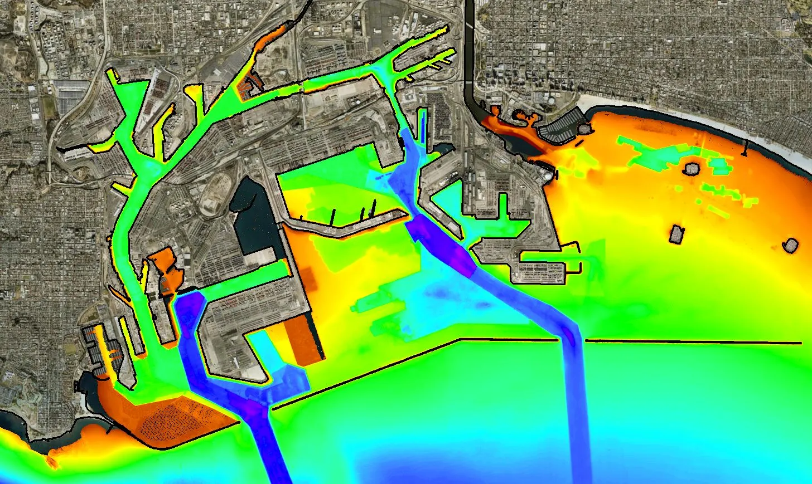
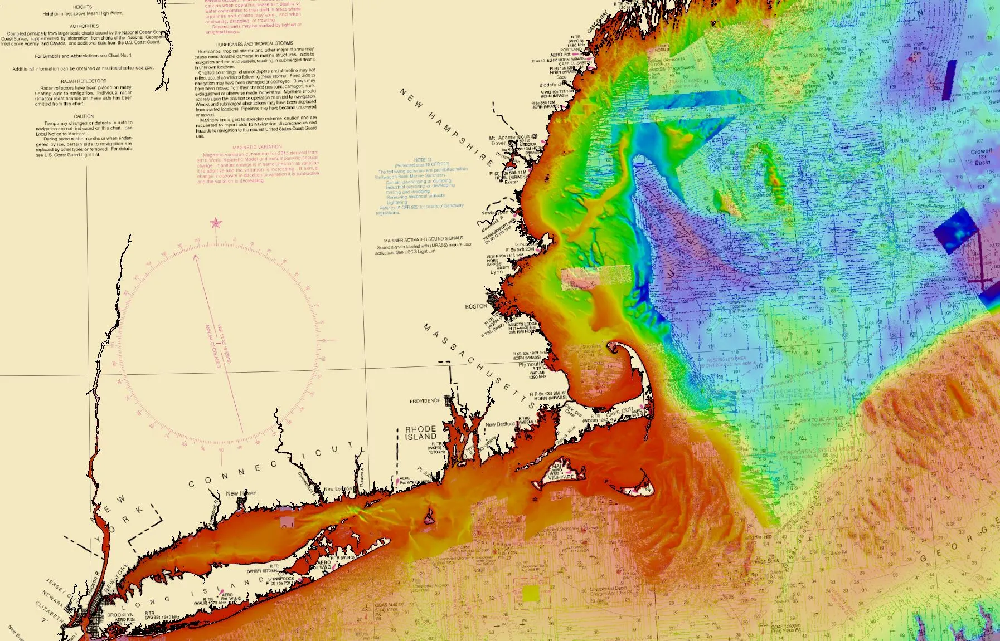
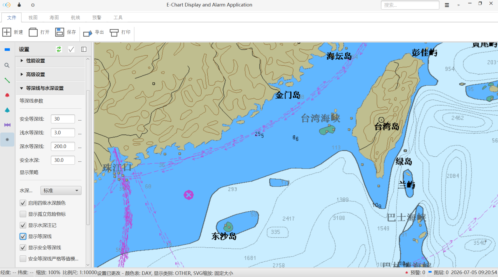
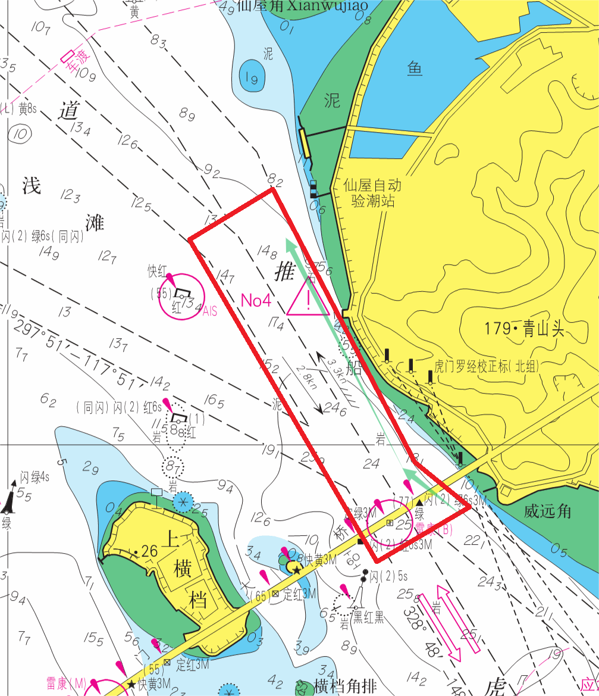

安全
以精准预警守住航行底线，帮助船舶提前识别浅滩、碍航物、偏航等关键风险。
东星海图科技有限公司是一家专注于航海电子海图显示与导航预警系统的科技企业。我们面向航运、海事、渔船与游艇等场景，提供可靠、清晰、易用的海图导航与风险预警方案。
以精准预警守住航行底线，帮助船舶提前识别浅滩、碍航物、偏航等关键风险。
以智能系统降低操作负担，让复杂海图信息更易理解，让日常航行管理更高效。
以清晰航线与辅助决策保障航行顺畅，减少不确定因素对航程效率的影响。
以长期可靠的技术能力陪伴远航征途，让每一次出发都拥有更稳健的抵达信心。
支持 S-57 / S-63 / S-10X 等国际标准海图格式，呈现清晰、稳定、可信的航行底图。
标准兼容海图要素可读稳定呈现
结合实时航行数据持续更新船位与航迹，让航行状态、历史路径和当前位置保持可追踪。
实时船位航迹记录状态追踪
主动识别浅滩、碍航物、偏航和接近危险区域等风险，把提醒前置到决策之前。
主动识别提前提醒降低遗漏
综合航速、潮汐、气象与航行限制等因素，为用户提供更顺畅、更可靠的航线建议。
航线建议航程效率辅助决策
面向远洋运输、近海捕捞、内河航道、码头船运、海事监管和游艇巡航等场景。
多船型多水域多业务场景




每一段航程，都值得被安全守护。东星海图以技术为舵，以责任为帆，让每一次出航，都拥有平安归航的底气。
Stars above. Seas ahead.